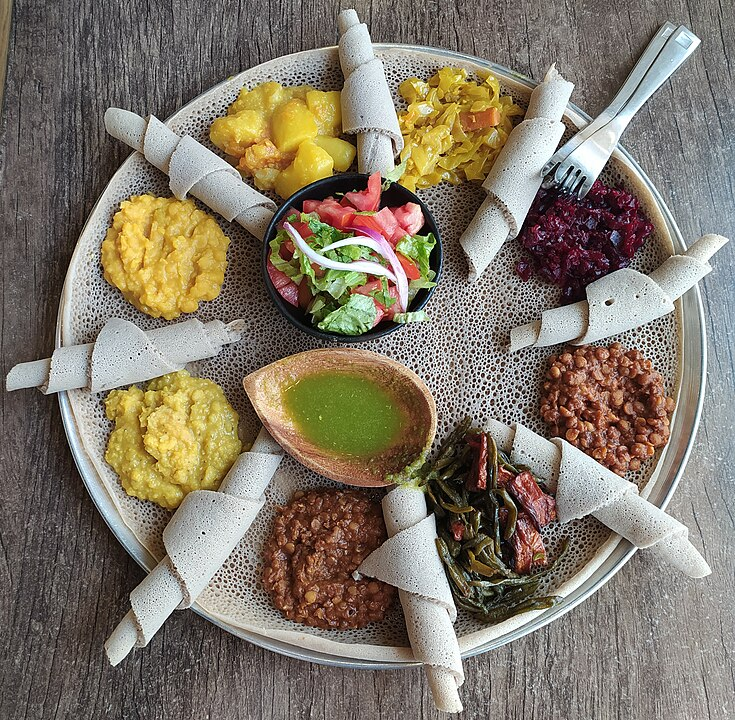

Injera Ethiopian flatbread, typically made from a batter of fermented teff (Eragrostis tef) flour and known for its spongy texture and sour taste.
The word injera is derived from the Amharic word ənǰära.
Injera is a staple of traditional Ethiopian cuisine.
It is usually made with flour ground from the seeds of teff, a grain that was domesticated as many as 6,000 years ago in Ethiopia and that is the smallest known grain in the world.
Its small size prevents the removal of bran and germ, and thus, when ground, teff produces a whole-grain flour (containing bran and germ).
Injera can also be made using barley, millet, or wheat flour.

how to make injera
Dabo is an Ethiopian bread that is served by Ethiopian Jews during Shabbat and holidays as a challah.
It is round, crumbly and a tad bit sweet, similar to the Yemenite-Jewish overnight sabbath bread kubaneh.
In Ethiopia the bread was baked in a round clay pot over embers in a fire pit in the ground.
Tej is a traditional honey wine or mead like drink that originates from Ethiopia.
It holds a significant cultural and historical importance in Ethiopian society and is considered the national drink of the country.
Tej is made by fermenting honey with water and often incorporating the use of a specific ingredient called Gesho,
which is a shrub native to Ethiopia. The Gesho adds a distinct bitterness to the beverage and contributes to its unique flavor profile.
It is typically served in a special boiling flask like vessel called berele and is enjoyed during social gatherings, celebrations, and festive occasions in Ethiopia.
how to make tef
Tella is another traditional Ethiopian beverage that holds cultural significance in the country.
It is a type of beer that has been brewed in Ethiopia for centuries.
Tella is typically made from fermented grains, most commonly barley, although other grains like wheat or teff can also be used.
The brewing process involves soaking the grains, malting them, and then fermenting them with water.
Tella has a distinctively light and slightly sour taste, often compared to a refreshing and mildly carbonated beverage.
It is a popular drink in Ethiopia, particularly among the rural population, and is often consumed in social gatherings, festivals, and during traditional ceremonies.